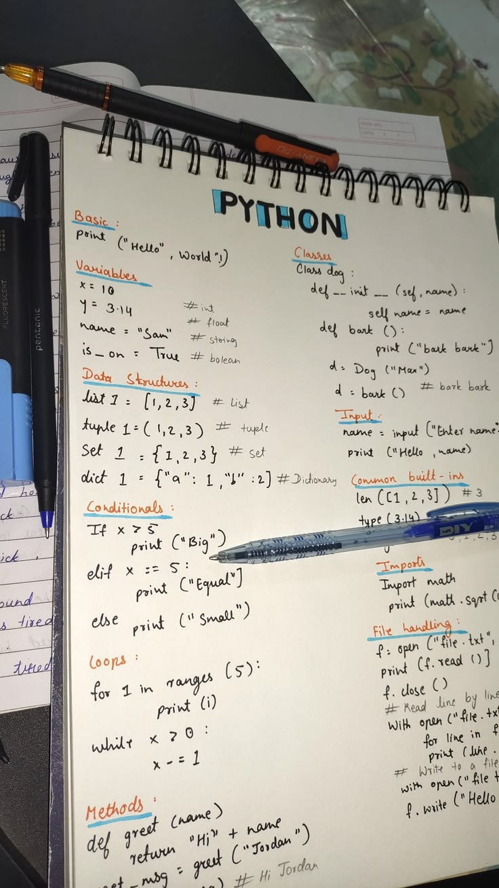
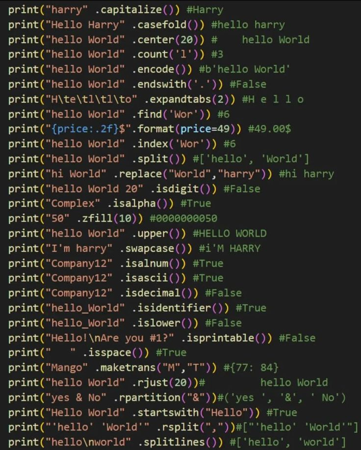
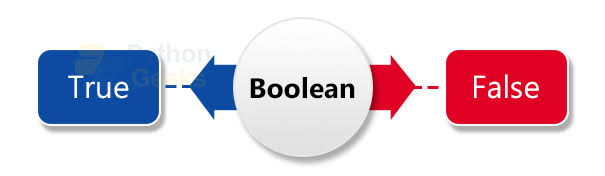
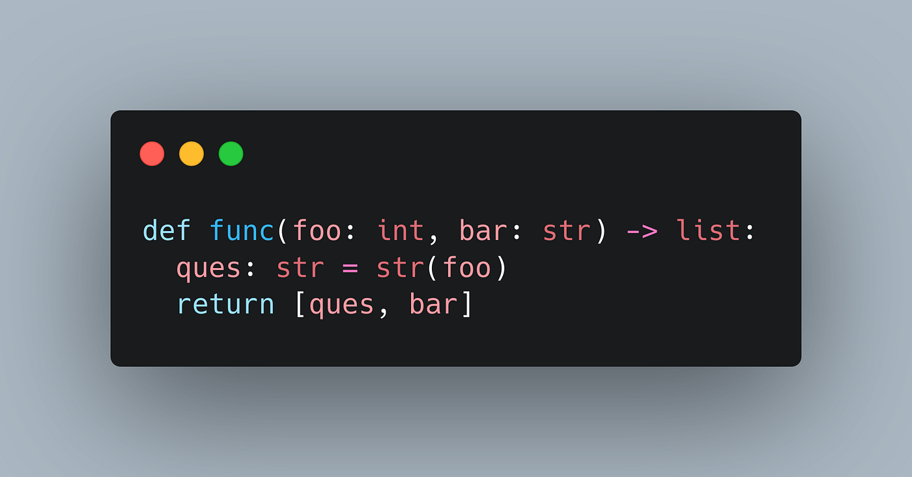
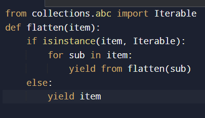
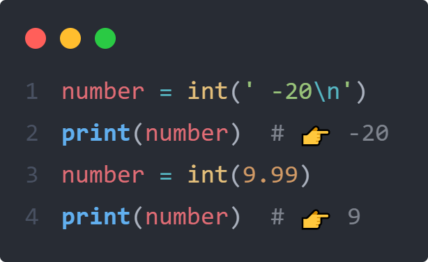
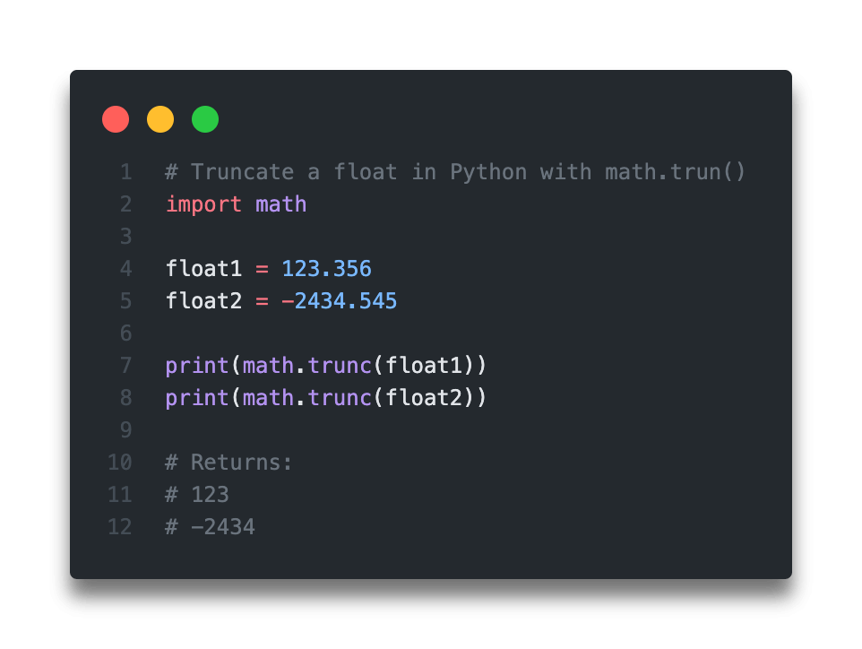
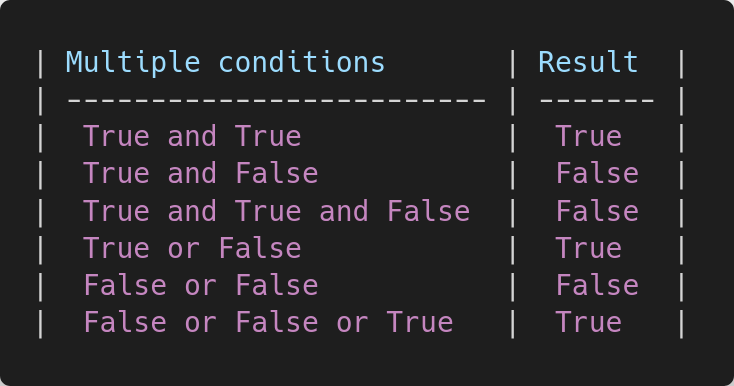

Build a Report Card Printer
(Workshop)
In this particular course, we are going to review of the knowledge that we have learned in the previous web-page. So, this course will be a workshop for you to practice and review the knowledge that we have learned in the previous web-page.
In this workshop, you will practice Python data types by building a simple report card printer.
As you learned in previous lessons, variables are assigned in this way:
greeting = 'Hello, World!'
In the example above, the variable greeting has the value of a string, which is a sequence of characters surrounded by quotes.
Create a variable called name and assing it the string Your Name.
Remember to surround the value with either single or double quotes as shown in the example.


You can print the value of a variable using the print() function.
Example Code:
greeting = 'Hello World'
print(greeting)
You will learn more about functions in upcoming lessons.
For now, know that a function use a reusable block of code that can be called, or invoked, to run its code, and arguments can be passed to it.
In the example above, print(greeting) us a function call, and greeitng is the argument of the function.
Refer to the example and print the name variable.
Check the output in the terminal.

You should now see the student name printed in the terminal.
Python provides a function named type() that can be used to check the type of a value.
Example Code:
platform = 'Python'
print(type(platform))
In the example above, the output

The report card should also show whether the student is currently enrolled. This can be represented using a boolean value. Boolean values represent a yes-or-no condition, and they are often used to make decisions in code. There are only two boolean values: True and False. Declare a variable named is_student and assign it the value True.

The print() function can display more than one value at a time.
Separate values with a comma ( , ) to print them on the same line.
Example Code:
subject = 'Python'
print(subject, type(subject))
Print both is_student and type(is_student) on the same line using a comma, as shown in the example.
Then check the output in the terminal that shows the value of is_student, and its type bool boolean.

The student name should follow the same format as the other details. Remove the earlier outputs of the name variable. Then, print name and type(name) together on one line separated by a comma like the previous step.

Now you need to add the student's age to the report card. For that you'll use an integer, one of the numeric data types in Python Declare a variable named age and assign it the integer value 20. Then, print the value and data type of age together separated by a comma. Check the output in the terminal that shows the value of age, and its type as int (integer).

Now, add the student's score.
Declare a variable named score and assign it the value 80.5.
Although both age and score are numbers, they may not be the same kind.
Python provides a function called isinstance() to check this.
Example Code:
x = 10
print(isinstance(x, int))
Use isinstance() to check whether score is an int, and print the result to the terminal as shown in the example above.

The output is False, which shows that score is not an integer. Another common kind of number in Python is float, which represents a number with decimals. Replace int with float in the existing isinstance() call to confirm this.
The output is True, confriming that score is a float. Complete the report card by printing the score value along with its data using a single print() statement.
Quote for YOU!
Keep Learning no matter how hard it is.
"It's not about how hard you can hit, it's about how much you can take, and keep moving forward anyway. That's how wining is done."
"Do, or do not. There's no such thing as almost — commit fully, or don't start at all."
"It's not that I'm so smart, it's just that I stay with problems longer."